Образы Майкопа в дневниках и воспоминаниях Е. Л. Шварца
Проект посвящён изучению образов города Майкопа в дневниках и воспоминаниях русского писателя и драматурга Евгения Львовича Шварца. Актуальность темы заключается в интересе к культурной памяти региона и отражению исторической реальности через личные впечатления автора. Цель работы — проанализировать, как Майкоп представлен в текстах Шварца, какие черты города он выделяет и какое значение придаёт этому периоду своей жизни.
Образы Майкопа
Исторический контекст
События, описываемые Шварцем, относятся к периоду Гражданской войны в России — времени нестабильности, смены власти и социальной напряжённости. Майкоп в этот период находился в зоне военных действий, что отражалось на повседневной жизни его жителей. Через личные записи автора можно увидеть, как исторические события влияли на атмосферу города, создавая ощущение тревоги и неопределённости.
Городская среда
В воспоминаниях Шварца Майкоп предстаёт как провинциальный южный город с особой атмосферой. Он описывает улицы, дома, быт жителей, создавая живой и образный портрет городской среды. Важное место занимают детали — интерьеры, разговоры, повседневные сцены.
Личное восприятие
Майкоп воспринимается Шварцем через призму личных эмоций — тревоги, надежды, растерянности. Этот город становится для него местом внутреннего опыта.
Маршрут по местам из воспоминаний Шварца
На карте отмечены места, связанные с воспоминаниями Евгения Львовича Шварца о Майкопе и событиях периода Гражданской войны.
Воспоминания и ключевые места Майкопа в тексте Е. Л. Шварца
Ниже представлены ключевые места Майкопа, упоминаемые в дневниках и воспоминаниях Евгения Львовича Шварца. Для каждого места приведены цитаты автора, исторический контекст и место для фотографии.
Краснооктябрьская, 23 — Гостиница «Европейская» («Европа»)
Семья Шварца останавливалась здесь при приезде в Майкоп в 1902 году. Это место считается отправной точкой маршрута «Майкоп Евгения Шварца».
«Вот и таинственные, значительные майкопские улицы. Всю жизнь вспоминала мама, как встретила меня на вокзале. “Я даже испугалась: волосы чуть не до плеч, штаны с бахромой, ступает как-то странно, мягко. Что такое? Оказывается, башмаки без каблуков и почти без подошв — вернулся сын из Москвы”. Два дня никуда я не выходил: меня переодевали, переобували, стригли».
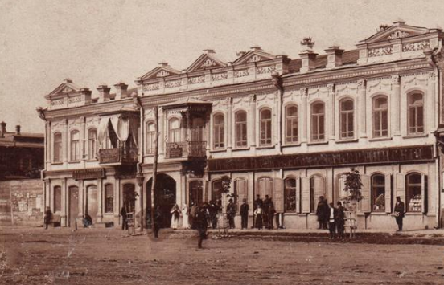
Базарная площадь (ныне Площадь Ленина)
«На площади вечно, как на базаре, толпились возы с распряженными конями. На возах лежали больные, приехавшие из станиц на прием к Василию Федоровичу».
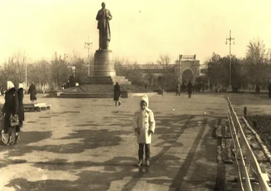
Краснооктябрьская, 21 — Гостиница «Россия»
Бывшая гостиница Степана Карапетова, ныне здание администрации города.
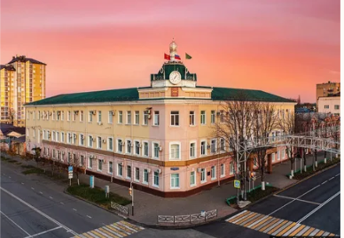
Краснооктябрьская, 14 — Дом Зинковецкого и «Брехаловка»
Один из центров городской жизни, место торговли и городских разговоров.
«Магазин и в самом деле был колониальным. Входя туда, ты слышал устойчивый, не меняющийся запах пряностей...»
«…и икра, и семга, и ветчина, и конфеты, и швейцарский шоколад, и крупа, и мука…»
Здесь находилась знаменитая «Брехаловка» — место городских разговоров и сплетен.
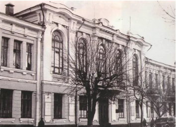
Краснооктябрьская, 13 — Торговый дом Каплановых
Одно из крупнейших торговых зданий Майкопа, ныне Институт гуманитарных исследований.
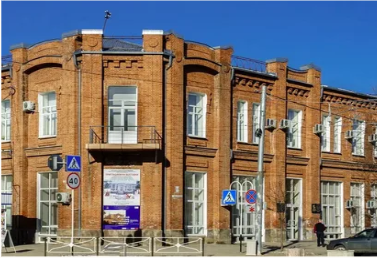
Краснооктябрьская, 17 — Доходный дом Каплановых
Сегодня здесь находятся гостиница и ресторан «Майкоп».
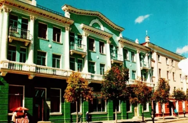
Первомайская, 240 — Первая городская почта
Ныне Майкопский медицинский колледж имени Густаво Фринга.
«Майкоп был основан лет за сорок до нашего приезда… Несмотря на свою молодость, город был больше, скажем, Тулы...»
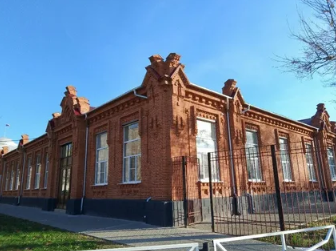
Ул. Победы, 10 — Армянская церковь
«Этот дом стоял на углу недалеко от армянской церкви, которая еще только строилась в те дни».
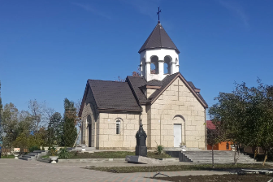
Ул. Победы, 6 — Дом доктора Соловьева
«Перехожу теперь к дому, который стал для меня впоследствии не менее близким, чем родной...»
«Это я оборвал резинку».
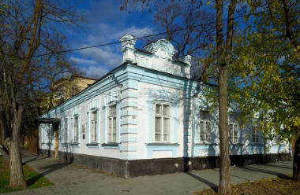
Ул. Победы, 19 — Дом Шварца
«Вот он ходит взад и вперед по большой зале родичевского дома, играет на скрипке...»
«К сожалению, у нас начинала образовываться семья, которая не помогала, а мешала жить».
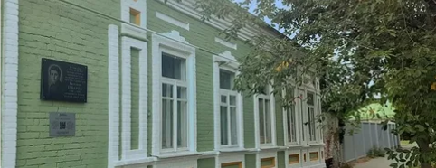
Ул. Ленина, 13 — Дом купца Оськина
«Уезжал я из Майкопа на рассвете... Мне казалось смутно, что в Майкоп не вернуться мне больше. Так и вышло».
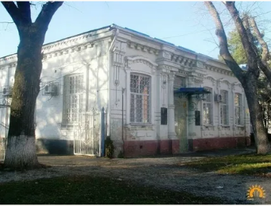
Ул. Пушкина, 179 — Пушкинский народный дом
«С левой стороны примыкал Пушкинский дом — большое, как мне казалось тогда, красивое кирпичное здание...»
«Сердце мое дрогнуло, когда я увидел освещенный, но угрожающе пустой зал...»
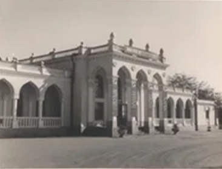
Ул. Победы, 173 — Реальное училище
«И вдруг объявлена была всеобщая мобилизация...»
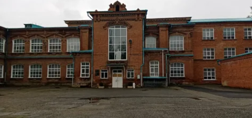
Ул. Первомайская, 185 — Типография Чернова
«Германия объявила нам войну».
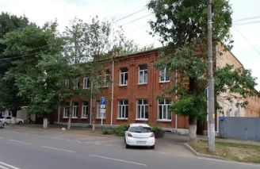
Ул. Первомайская, 197 — Аптека Альтшулера
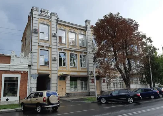
Заключение
Таким образом, Майкоп в воспоминаниях Е. Л. Шварца предстает не просто как географическая точка или фон исторических событий, а как важный смысловой и эмоциональный центр его личного опыта. Через описание города автор фиксирует не только внешние признаки эпохи, но и внутреннее состояние человека, оказавшегося в условиях исторической нестабильности.
Проведённый анализ показывает, что образ Майкопа формируется на пересечении двух уровней восприятия — объективного (исторические события, городская среда, быт) и субъективного (личные переживания, эмоции, память). Именно их взаимодействие делает воспоминания Шварца ценным источником для понимания не только истории города, но и психологии человека в переломную эпоху.
Особое значение имеет то, что Майкоп становится в текстах Шварца пространством становления личности. Здесь формируются его первые жизненные впечатления, закладываются основы мировоззрения и художественного восприятия мира. Этот опыт впоследствии отразился в его литературном творчестве, где тема человеческих чувств, выбора и внутренней свободы занимает центральное место.
Таким образом, изучение образов Майкопа в дневниках и воспоминаниях Е. Л. Шварца позволяет глубже понять не только специфику конкретного исторического периода, но и роль личной памяти в формировании культурного и художественного сознания. Работа с подобными источниками показывает, насколько тесно переплетаются история, литература и индивидуальный человеческий опыт.
Источники
1. https://tass.ru/v-strane/7510445
2. https://tass.ru/kultura/19649643
3. https://tass.ru/kultura/19081569
4. https://tass.ru/v-strane/17164743